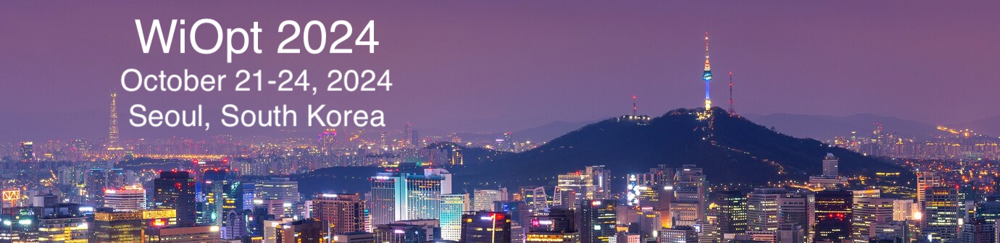

1. Deep Reinforcement Learning-based Resource Allocation and Mode Selection for Semantic Communication
Hyeonho Noh (Seoul National University, Korea (South)); Sojeong Park (POSTECH, Korea (South)); Hyun Jong Yang (Seoul National University, Korea (South))
2. Addressing Out-of-Distribution Challenges in Image Semantic Communication Systems with Multi-modal Large Language Models
Zhang Feifan, Yuyang Du and Kexin Chen (The Chinese University of Hong Kong, Hong Kong); Yulin Shao (University of Macau & Imperial College London, Macao); Soung Chang Liew (The Chinese University of Hong Kong, Hong Kong)
3. Semantic-Aware Remote Estimation of Multiple Markov Sources Under Constraints
Jiping Luo and Nikolaos Pappas (Linköping University, Sweden)
4. Hybrid Status Update Systems With Dedicated and Shared Servers
Sahan Liyanaarachchi and Sennur Ulukus (University of Maryland, USA); Nail Akar (Bilkent University, Turkey)
5. Minimizing Age of Information in an Energy-Harvesting Scheduler With Rateless Codes
Subhankar Banerjee and Sennur Ulukus (University of Maryland, USA)